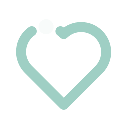
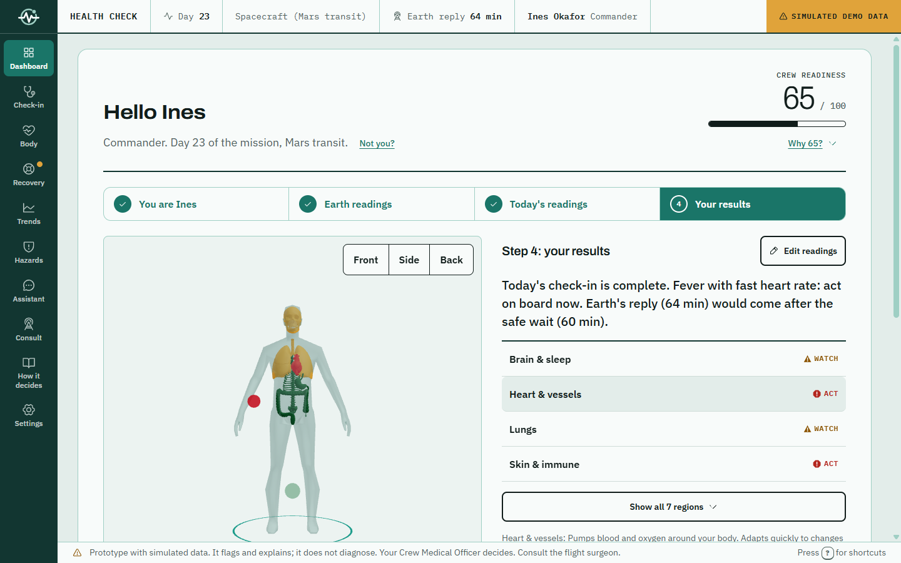
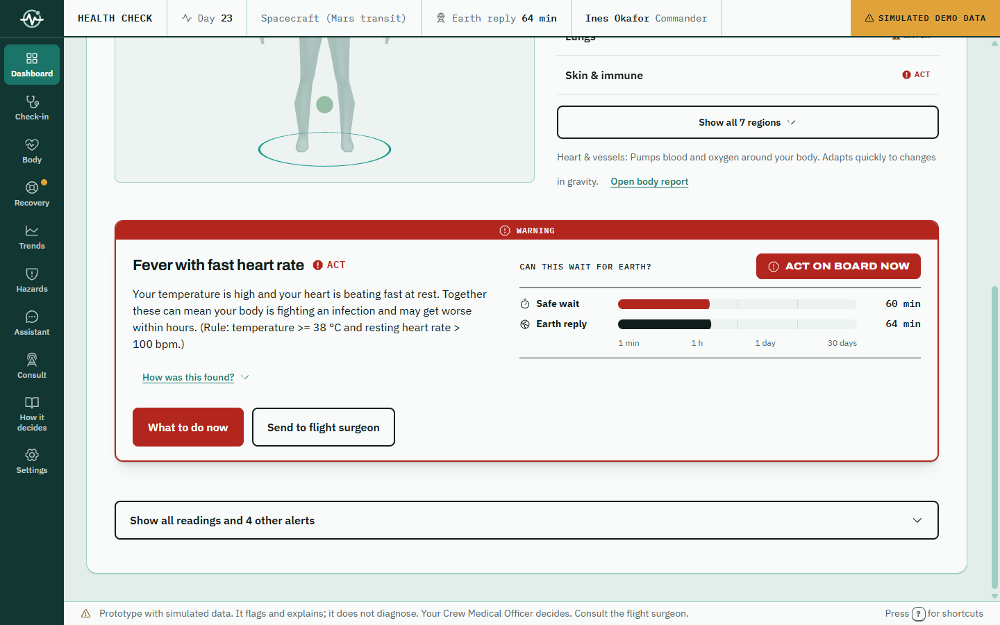
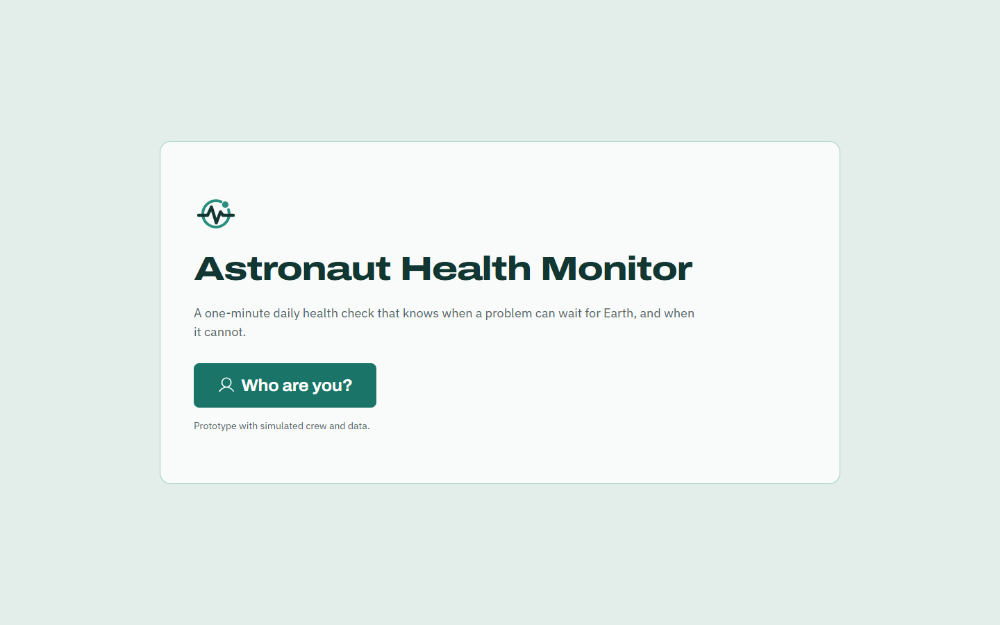
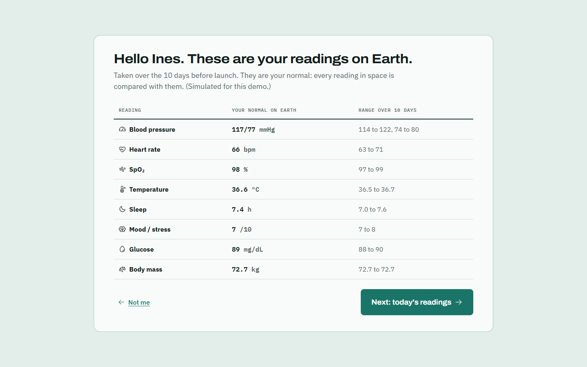
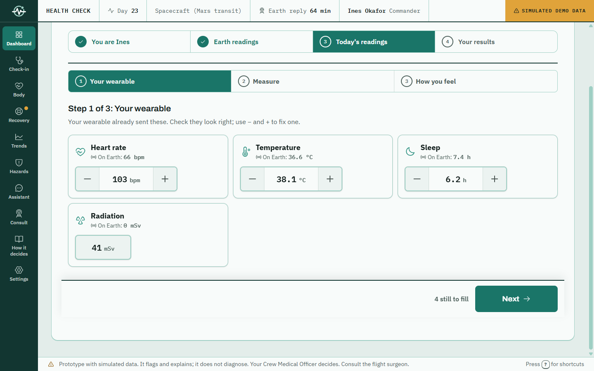
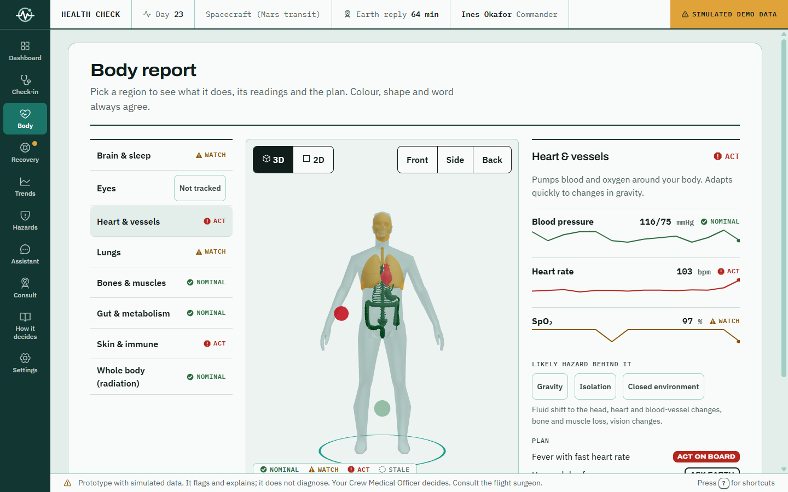

ASTRONAUT HEALTH MONITORA one-minute daily check-in for crew far from home.
Challenge: Create Health Monitoring Software for Astronauts on Space Missions
2026 NASA Space Apps Challenge

one way to Earth from Mars. A reply can take over an hour.
with no contact at all during solar conjunction.
a Crew Medical Officer with basic training, not a doctor.
NASA's five hazards make it worse: space radiation, isolation and confinement, distance from Earth, altered gravity and hostile closed environments.


The app opens by asking who is checking in.

10 days of Earth readings become your baseline.

Wearable values arrive filled in. One tap measures the rest.

Real organ models light up. Tap one to learn more.
Built for a touch panel: 56 px targets, an on-screen number pad, nothing to type. It also works with a mouse or trackpad.
Tested on 300 simulated astronauts: every full fever caught on day one; 1.3 % false "unusual day" alarms. A check of the method, not clinical accuracy.
Fever with a fast heart rate, on Mars transit (22 min each way). On the ISS (about 20 min) the same alert says ASK EARTH.
All crew and readings are simulated. No real astronaut data. It flags and explains; it does not diagnose.
AI use: code and documentation written with Claude (Anthropic). Narration in the video is Kokoro text-to-speech. Logo drawn as code with AI assistance. 3D models: Sketchfab, CC-BY 4.0.